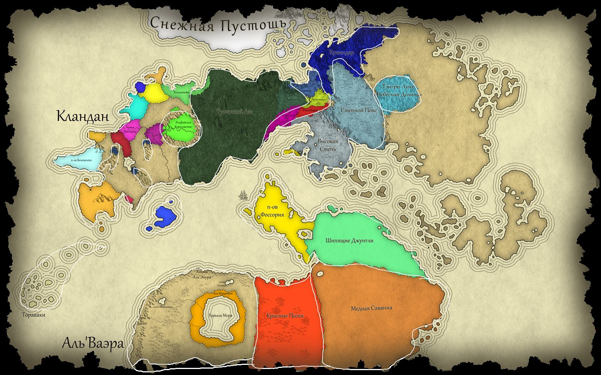

✨ Сияние
Вера в Единого Творца, являющего себя в двух Ликах — Милостивом (прощение и исцеление) и Правом (закон и справедливость). Пришла с юга; на север её принёс пророк Агапит. Священный текст — «Скрижали Сияния».
Peace & Order
Осколки шести миров, соединённые Пеленой. Здесь сошлись земли, что когда-то были разделены, а теперь истекают кровью в единой реальности.
исследовать мирЗдесь начинается ваше увлекательное путешествие по неофициальному сеттингу для пятой редакции легендарной настольной ролевой игры Dungeons & Dragons. Этот уникальный мир был создан талантливыми энтузиастами из Таверны «Карточная Буря».

Восточная пустыня, хранящая память о павшем Уруде. Боги ходят среди смертных, джинны торгуют желаниями.

Павшая Империя, на костях которой выросли десятки государств. Интриги, магия и гномьи паровые технологии.

Восточные степи под копытами Крылатого Улуса. Свободные ярганы берегут традиции, а из песков приходит драконья Орда.
Вера в Единого Творца, являющего себя в двух Ликах — Милостивом (прощение и исцеление) и Правом (закон и справедливость). Пришла с юга; на север её принёс пророк Агапит. Священный текст — «Скрижали Сияния».
Пантеон новых богов Каладана, вознёсшихся при основании Империи: Отец, Дева, Воин, Матерь, Старик, Кузнец и Неведомый. Ныне они ведут войну на истощение против захватчика — Солнцеликого.
Вера пустыни Аль'Ваэра в единого безымянного Творца, чей лик незрим, а воля абсолютна. Священный текст — Рухбат, столица веры — город Кехабат, символ — золотой круг без начала и конца.
Само Бытие, стоящее над всеми пантеонами. Ему не молятся и не ждут ответа — но во всех мифах народов есть отголосок истины: мир сотворён силой, что выше богов.
| Период | Годы | События |
|---|---|---|
| Эпоха Шести Миров | до 0 ГС | Архитекторы создают шесть миров. Каждый из них застывает в своём перекосе. |
| Слияние | 0 ГС | Двуликий соединяет миры в один. Рождается Пелена, Архитекторы становятся смертными. |
| Эпоха Первая | 0–250 ГС | Выжившие осколки народов ищут новые земли. |
| Эпоха Первых Царств | 251–500 ГС | Рождаются первые королевства и союзы. |
| Туманная Эпоха | 501–750 ГС | Пелена расширяется, границы земель зыбки. |
| Эпоха Стали и Веры | 751–1000 ГС | Расцвет Каладанской Империи; Сияние приходит на север. |
| Эпоха Раскола | 1001–1250 ГС | Явление драконов (1100), битва на Ворожбе (1130), падение Империи. |
| Эпоха Предвестий | 1251–1500 ГС | Свержение Тугор-кагана (1445), вторжение Орды и нападение на Калинов мост (1500). |
Кочевая теократическая империя драконорождённых под властью живого бога Улуг-Хана. Военная машина, что сметает всё на своём пути.
Учёные и воины, изучающие Пелену и первозданную энергию. Они делают «проколы», стабилизируя реальность в точках высокого давления.
Тайная преступная сеть, которую называют «Паутиной». Контролирует теневую экономику, шпионаж и контрабанду всех четырёх городов.
Боевые школы, рождённые из духа Архитектора Войны, разлетевшегося на осколки в битве на Ворожбе. Каждая школа — философский путь воина.
Древние Великие Визири, пережившие падение Уруда. По слухам, их тень до сих пор падает на пустыню — и на её города.
Кампания Таверны, в которой путники идут плечом к плечу по северным землям Орвея, скрепляя клятвы мечом и щитом.
Экспедиция в сердце пустыни Аль'Ваэры, где под барханами спят руины павшего Уруда, а джинны помнят каждого искателя сокровищ.
Истории, сплетённые в Пелене между осколками реальности. Нити судьбы ведут героев через границы миров — если те не оборвутся.

✦ Тёмные нити на карте — Пелена, соединяющая осколки миров.
Хочешь, чтобы в наших бочках не переводился эль, а под сводами лилась музыка? Каждая монета — вклад в общее дело!
Поддержать Таверну: taplink.cc/taverncardtempest